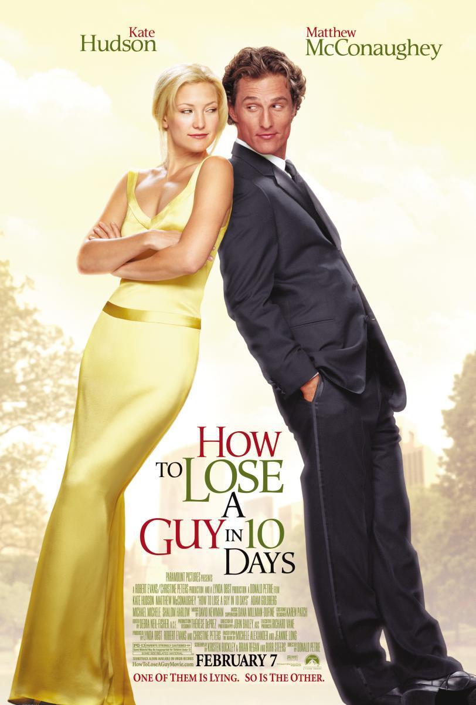
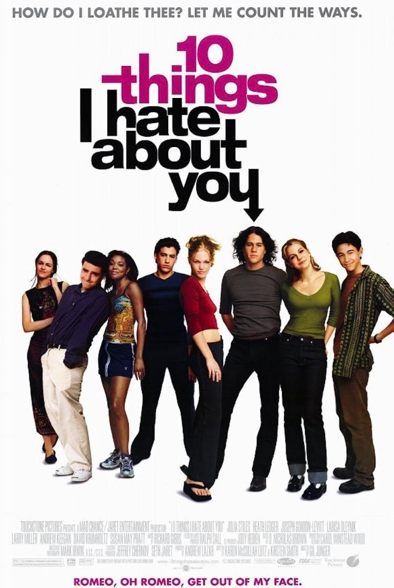
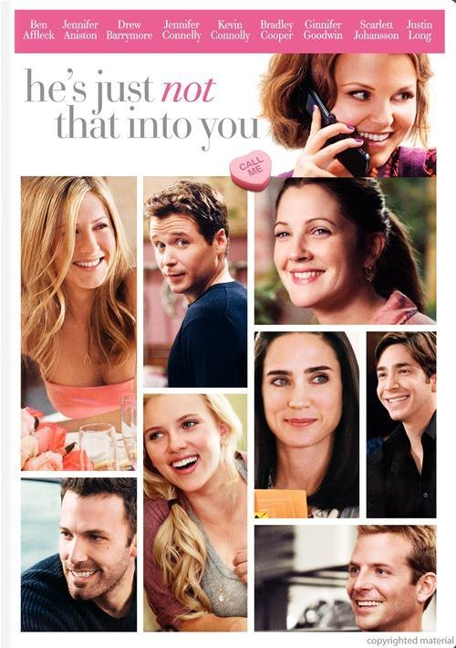

How To Lose A Guy In 10 Days Poster by
Film Affinity
How To Lose A Guy In 10 Days 2003
The "How-To" columnist for Composure Magazine, Andie Anderson, has an unusual assignment with a short
turnaround time. She must write a first-person narrative detailing all the things women unintentionally
do to turn men away. and she has ten days to complete it. Her goal is to locate a man, win his heart,
and then commit all the standard dating faux pas in order to get him to dump her.
10 Things I Hate About You 1999
Bianca Stratford is incredibly eager to go out with their school's hottie, Joey Donner. Rather than go
out with a boy, Kat Stratford would sooner die. Bianca is allowed to date Mr. Stratford's rule—that is,
when Kat does. Bianca pleads with her sister to spend the evening in "teenage normalcy." Bianca has no
idea that Cameron, her adorable but controversial French tutor, is also attempting to set her sister up,
in addition to Joey. Patrick, the "set up guy" for Joey and Camereon, is attempting to persuade Kat to
go out with him. Will Kat go out with him, though, and will it work? Will Joey and Bianca go out?

10 Things I Hate About You Poster by
Film Affinity
Notting Hill 1999
Hugh Grant is a modest bookseller whose life is irrevocably altered when the world's most well-known
movie star enters his store and gives him a big, wet kiss. "I'm not having fun at the expense of my
life, I'm having fun at the expense of 'her' life," actress Roberts, who plays a notorious movie star
who earns about $15 million a picture and must put up with irate fans, internet invasions of privacy,
and tabloid scandals, declares.
He Is Just Not That Into You 2009
Trying to read the signs of the other sex and hoping to be the exceptions to the "no-exceptions" rule, a
group of interconnected twenty- and thirty-somethings from Baltimore navigate their various
relationships from the shallow end of the dating pool through the deep, murky waters of married life.
Alex suggests that Gigi should stop staring at her phone; all she wants is a man who says he'll call and
actually does. After years of dedicated singlehood, Beth questions whether she should break up with her
boyfriend, Neil, but he doesn't see anything wrong with their single status. Because Ben struggles to
trust himself around Anna, Janine is unsure if she can trust her husband. Anna is torn between her
straight-talking, no-fuss standby, Conor, who is upset that he can't have her, and the attractive
married man. Mary just needs to find a straight man to join her vast network of adoring, encouraging
men. He (or she) is just not that into you, if you've ever sat by the phone wondering why he promised to
call but didn't, or if you're having trouble understanding why she no longer wants to sleep with you, or
why your relationship isn't progressing to the next level.

He Is Just Not That Into You Poster by
Film Affinity
Pretty Woman 1990
While visiting Los Angeles, wealthy businessman Edward Lewis hires prostitute Vivian Ward. In order to
accompany him to various society events where he feels he should have a date on his arm, he offers her
money to stay with him for a week.